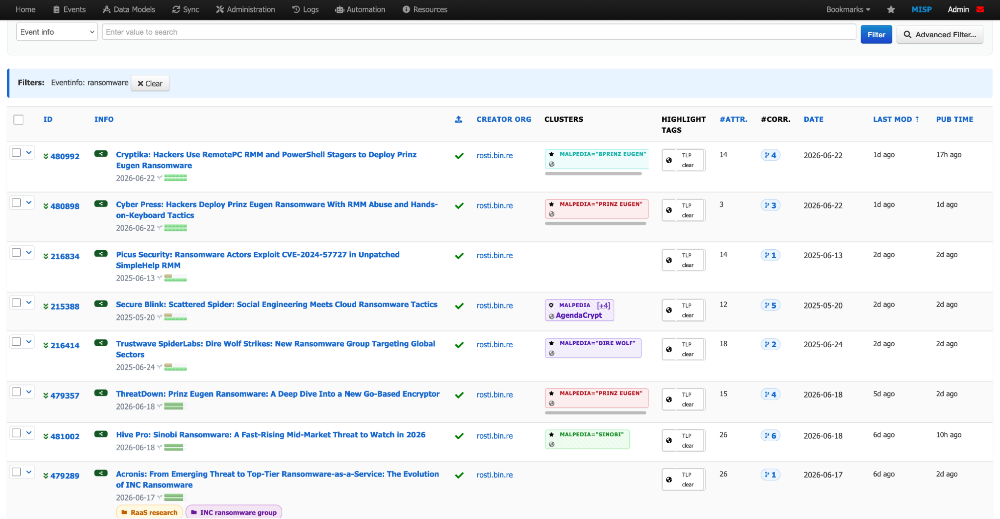
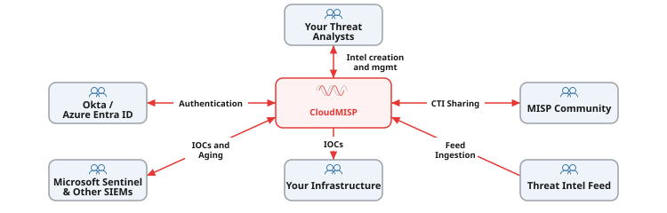
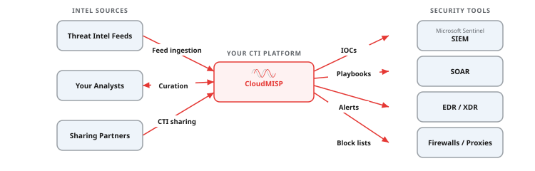
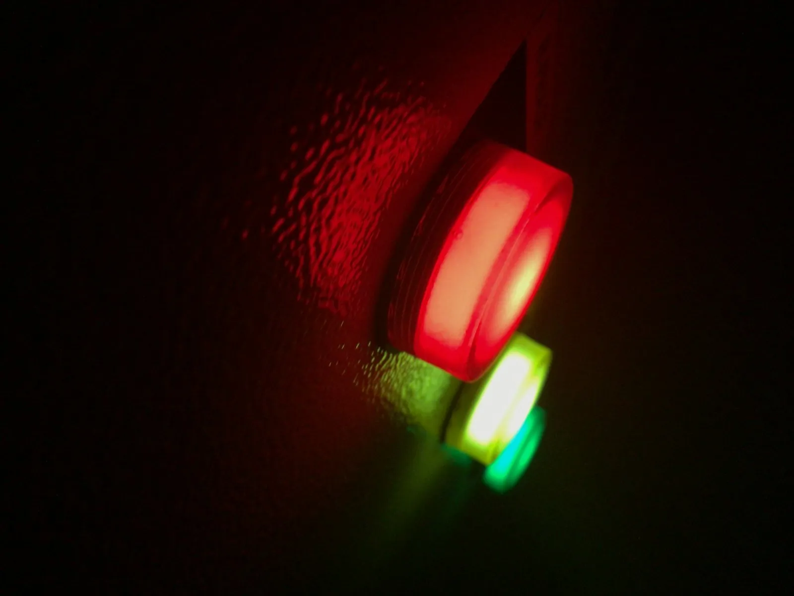
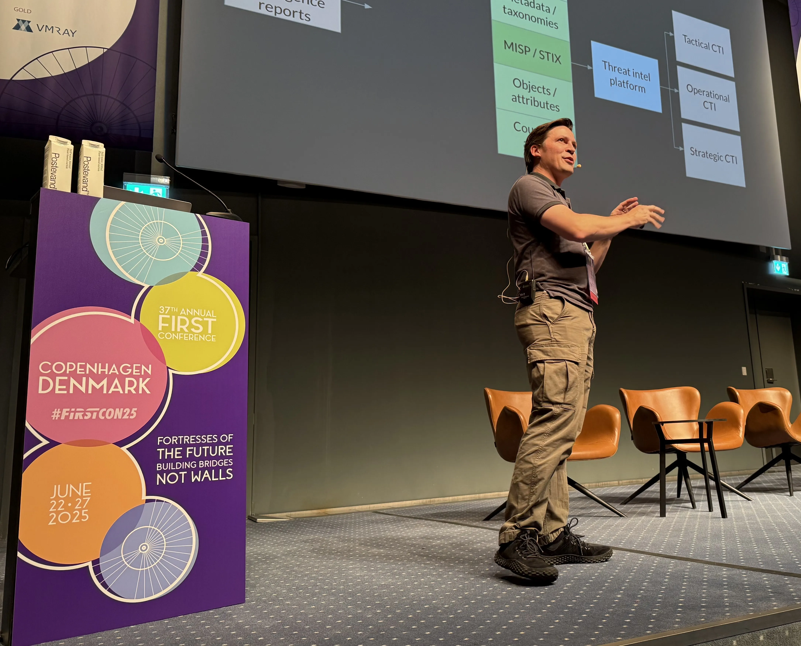
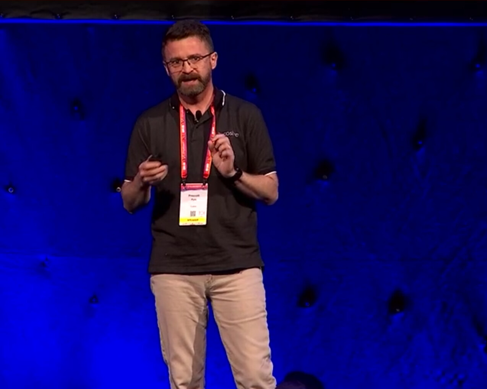

CloudMISP is a fully managed MISP platform — production-grade, always current, and ready to connect to the tools and communities your team already works with.
We handle the deployment, testing, and day-to-day operations so your analysts can focus on the intelligence.
Request a CloudMISP demo
CloudMISP is an enterprise-grade managed MISP platform built and operated by Cosive. We handle the infrastructure, upgrades, backups, and monitoring so your analysts can focus on what matters — creating, curating, and sharing threat intelligence.
Whether you are a single team getting started with CTI or a national sharing community connecting dozens of organisations, CloudMISP scales to meet you where you are.

2 of 3 quotes are placeholder — replace with real customer quotes
Cosive CloudMISP allowed us to deploy a secured MISP instance quickly and without the worry of finding specialist resources to deploy and maintain a new threat intelligence platform. Using CloudMISP supports our CTI capability without the overhead of another product to keep up to date in our patching cycle. The Cosive team are extremely knowledgeable in the area and their support is extraordinary.
The Cosive team understands the operational reality of running a CTI programme. CloudMISP is not just hosting — it is a genuine partnership that has accelerated our sharing capability.
We needed a platform our sector partners could trust. CloudMISP gave us enterprise-grade infrastructure and Cosive handled the onboarding for every member organisation.
Assisted SSO configuration, an optional TAXII server for STIX publishing, custom SIEM integrations, and workflow automation that extends what open-source MISP provides out of the box.
Keep your threat intelligence within your jurisdiction. Deploy CloudMISP in any AWS region to meet local data residency and sovereignty requirements — including AWS European Sovereign Cloud for organisations that need data to remain entirely within EU borders under EU-controlled infrastructure.
Self-healing architecture with watchdog services that detect and recover from failures automatically. Your analysts should not notice infrastructure issues — and they will not.
Every MISP upgrade goes through code review, unit tests, system tests, synthetic user testing, and manual QA before it reaches your instance. We catch problems so you do not have to.
Blue/green deployments mean upgrades typically cause less than four seconds of disruption. No extended outage windows, no weekend maintenance emails.
Encrypted, cross-region backups ensure your data survives even regional infrastructure failures. Recovery is tested regularly — not just documented.

Chris is a MISP core contributor. He regularly trains and presents on MISP and threat intelligence sharing at conferences globally including hack.lu and AUSCERT.

Terry helped develop the STIX and TAXII standards as a founding member of the OASIS CTI Technical Committee. He holds leadership roles in FIRST and the New Zealand Internet Task Force.

Co-designed Australia's national threat sharing program, CTIS. Contributor to CTI-CMM, the leading CTI maturity framework.

James has more than 20 years of experience spanning IT operations, software engineering, and security. He specialises in cloud infrastructure and has delivered MISP training at hack.lu and AUSCERT.
Lilith is a DevOps and software engineer with a background in security.
MISP gives your analysts a single view across every feed, every source, and every sharing community your organisation participates in. Events, attributes, and correlations surface together so your team can spot patterns, prioritise what matters, and move from alert to action without switching tools.
CloudMISP's Insight UI is purpose-built for this workflow — designed to make threat intelligence operational, not just stored.
Threat intelligence is only valuable when it reaches the systems that can act on it. CloudMISP integrates with your SIEM, SOAR, EDR, firewalls, and ticketing platforms — pushing IOCs, alerts, and context where your analysts and automated playbooks need them. Every integration is built to enterprise standards — authenticated, encrypted in transit, and designed for reliability at scale.
With CloudMISP Accelerator, our engineers build and maintain these integrations for you, so your team stays focused on analysis rather than plumbing.

MISP is built to fit into your existing security stack, and speaks the open standards your tools already understand — STIX/TAXII, OpenIOC, YARA and CSV. These are the main types of tools teams connect to CloudMISP.
Push indicators into your SIEM to drive detection, correlation and alerting.
Feed indicators to your endpoint tools to detect and block threats on the host.
Trigger playbooks and automate enrichment and response.
Turn indicators into detection rules and blocklists for your network defences.
Enrich indicators with third-party context and pull in external intelligence.
Connect to other platforms and share intelligence across your community.
Tell us which tools your team runs and we'll help you connect them to CloudMISP.
Talk to us about integrations →Every CloudMISP bundle comes with at least one production-quality MISP instance running on dedicated infrastructure with automatic upgrades, encrypted cross-region backups, enterprise SSO, and 24/7 monitoring. Each bundle differs in the level of training, expert implementation guidance, and features so that you can choose the one that works best for you.
* Fair use policy applies.
Tell us about your requirements and we'll recommend the best fit.
Request a CloudMISP demoPlaceholder content — replace with real case studies
A large resource company with operations across Australia, South America, and West Africa needed to consolidate fragmented threat intelligence workflows. Each regional team had its own ad-hoc processes, different feeds, and no shared view of threats affecting the wider organisation.
Cosive deployed CloudMISP Accelerator instances in each region, connected them with synchronised sharing, and integrated the output into their global Microsoft Sentinel deployment. Within six months, over 40 analysts were using the platform daily.

A central bank in the Middle East wanted to establish a national financial-sector sharing community. Member institutions ranged from large commercial banks with mature SOCs to smaller organisations with no dedicated security staff.
Cosive deployed CloudMISP Accelerator as the central hub with the TAXII Sharing Server add-on, enabling automated feed distribution to members who could consume STIX/TAXII, while others accessed the platform directly through a web interface. The community grew from a pilot with three banks to over twelve connected institutions within a year.
Share your use case and we'll show you how other teams like yours got started.
Request a CloudMISP demo

MISP (Malware Information Sharing Platform) is an open-source threat intelligence platform used by security teams worldwide. It helps organisations collect, store, share, and correlate indicators of compromise (IOCs) and other threat data. MISP is maintained by an active global community and is used by national CERTs, ISACs, and private-sector security teams alike.
CloudMISP is built on MISP, but it is not just MISP on a server. We add managed infrastructure, automatic upgrades with comprehensive testing, SSO integration, encrypted backups, self-healing architecture, and enterprise features like TAXII serving and custom SIEM integrations. You get an enterprise-grade platform — with the reliability, security, and compliance posture your organisation expects — without needing a team to build and maintain the infrastructure around it.
Yes. Cosive actively contributes to the MISP open-source project. We submit bug fixes, feature enhancements, and documentation improvements. We also participate in the MISP community through conferences, working groups, and community discussions. Our experience operating MISP at scale directly informs the contributions we make upstream.
MISP excels at collecting and correlating indicators of compromise, managing threat intelligence feeds, sharing intelligence with trusted partners, and distributing IOCs to security tools like SIEMs and firewalls. It is particularly strong for teams that need to collaborate — whether internally across departments or externally across organisations and sectors.
MISP is not a SIEM, a SOAR, or an endpoint detection tool. It does not replace your security monitoring stack — it complements it. If you need real-time alerting, automated response playbooks, or endpoint visibility, those are separate tools that MISP integrates with. MISP is best thought of as the connective tissue that makes your other security tools more effective.
CloudMISP is a commercial managed service, so we do not offer free instances. However, MISP itself is free and open-source — you can download and run it yourself. If you are a researcher affiliated with a university or research institution, get in touch and we will see what we can do. We are always happy to support the security research community where we can.
You absolutely could — and some organisations do. The question is whether that is the best use of your team's time. Running MISP at enterprise scale means handling upgrades, monitoring, encrypted backups, SSO integration, high availability, compliance, and scaling — on top of the analyst workflow that MISP is actually for. CloudMISP lets your team focus on threat intelligence work instead of infrastructure maintenance. For most teams, that trade-off makes sense.
Plus, with CloudMISP you get direct access to the Cosive team — specialists who can help you operationalise MISP, connect it to your workflows, and get real value from your threat intelligence programme.
Tell us about your team and what you are trying to achieve. We will get back to you within one business day.
Cosive CloudMISP allowed us to deploy a secured MISP instance quickly and without the worry of finding specialist resources to deploy and maintain a new threat intelligence platform. Using CloudMISP supports our CTI capability without the overhead of another product to keep up to date in our patching cycle. The Cosive team are extremely knowledgeable in the area and their support is extraordinary.